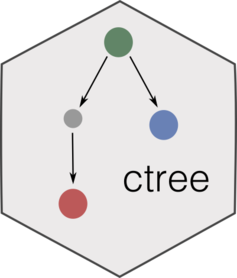
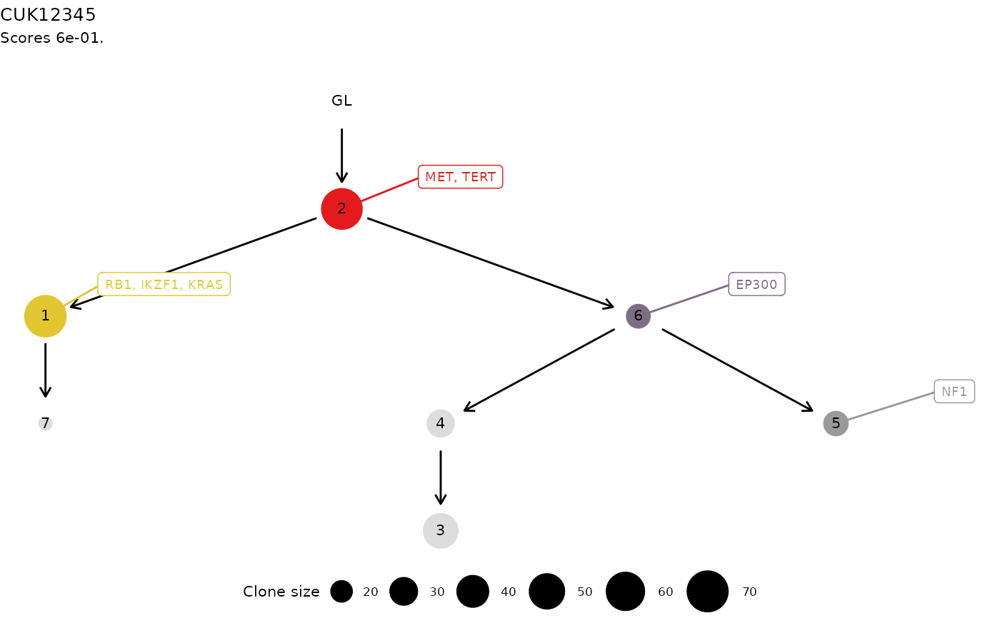

Plot a ctree tree.
plot.ctree.RdThis S3 method plots a ctree tree, using ggraph layout
functions. The tree is annotated and coloured in each node (i.e.,
cluster) that contain a driver event annotated. The driver id is also
reported via ggrepel annotation functions.
Usage
# S3 method for class 'ctree'
plot(
x,
node_palette = colorRampPalette(RColorBrewer::brewer.pal(n = 9, "Set1")),
tree_layout = "tree",
...
)Arguments
- x
A
ctreetree.- node_palette
A function that applied to a number will return a set of colors. By default this is a
colorRampPaletteapplied to 9 colours of theRColorBrewerpaletteSet1. Colors are generated following a topological sort of the information transfer, which is obtained fromigraph.- tree_layout
A layout that can be used by
tidygraph, which wrapsigraph's layouts. By default this is a `tree` layout.- ...
Extra S3 parameters
Examples
data('ctree_input')
x = ctrees(
ctree_input$CCF_clusters,
ctree_input$drivers,
ctree_input$samples,
ctree_input$patient,
ctree_input$sspace.cutoff,
ctree_input$n.sampling,
ctree_input$store.max
)
#> [ ctree ~ clone trees generator for CUK12345 ]
#>
#> # A tibble: 7 × 7
#> cluster nMuts is.driver is.clonal R1 R2 R3
#> <chr> <int> <lgl> <lgl> <dbl> <dbl> <dbl>
#> 1 1 72 TRUE FALSE 0 0.92 0
#> 2 2 69 TRUE TRUE 0.99 0.98 0.99
#> 3 3 48 FALSE FALSE 0 0 0.49
#> 4 4 29 FALSE FALSE 0.01 0.01 0.93
#> 5 5 24 TRUE FALSE 0.78 0 0
#> 6 6 23 TRUE FALSE 0.98 0.03 0.98
#> 7 7 15 FALSE FALSE 0 0.41 0
#>
#> ✔ Trees per region 1, 3, 1
#> ℹ Total 3 tree structures - search is exahustive
#>
#> ── Ranking trees
#> ✔ 3 trees with non-zero score, storing 3
plot(x[[1]])
